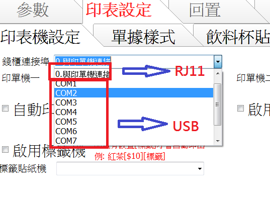

USB介面的錢箱，應用於先用的POS系統應該沒問題吧！
但錢箱老闆告訴我！一般都是買RJ介面比較好，可是我爬文，很多文提到USB可以單獨電腦控制不用透過印單機。
我想先用的軟體應該是無論是RJ介面或USB介面都可以支援吧！
等東西都回來後，我用先用試用版OKAY，我就會跟先用買正式版了！THANKS..
1 個回答
您好
RJ11比較好的原因 是因為可與印單機連接 少佔一個電腦USB 插孔
安裝較為簡單(不需要另外安裝USB驅動 ) 所以如果有印單機的話 會建議您買RJ11介面
對先用POS來說 不管是USB或RJ11 兩者都支援 用起來都是一樣的 先用都可以完整控制兩總介面的錢箱
設定方法
1.USB錢箱
安裝USB驅動 電腦會多一個COM port裝置(可能是1-9其中一個) 之後在先用設定是哪個COM
2.RJ11
將RJ11插入印單機後端 在選擇與印單機連接即可
